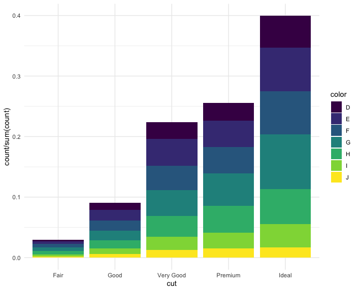
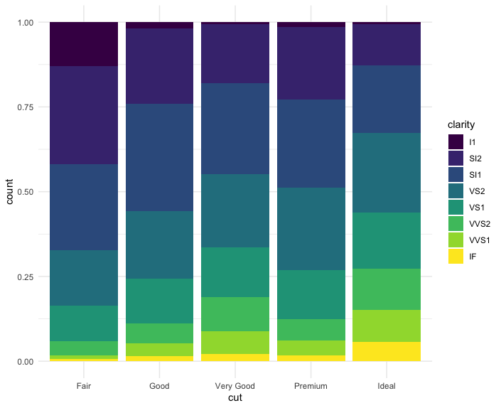
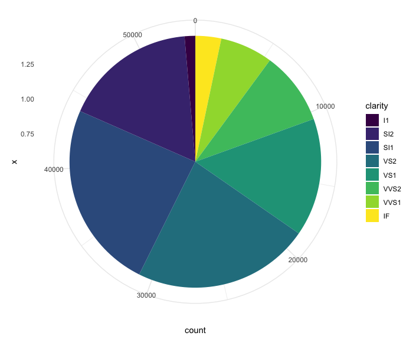

R for Data Science Day 1
I am incredibly excited that RStudio has begun an instructor certification program based on the Carpentries, so of course I signed up as soon as my overcommited nature allowed! This also provides me with the excuse and motivation to finally formally work my way through R for Data Science, a book I have read while waiting for GTT tests during my pregnancy and google-landed upon an umpteen number of times while debugging code, but never taken the time to sit down and do the exercises for - and of course the pedagogue in me knows quite well that THAT is how you actually learn and internalise the principles and concepts in any material, especially if it deals with programming and analysis. So over the next few weeks I plan to work my way through R4DS, and this post is the first in which I dive into the exercises.
Personal, highly non-exhaustive notes on section I: Explore
library(tidyverse)
theme_set(theme_minimal())
Steps of the data pipeline:

- Import: take data stored in a file, database, or web API, and load it into a data frame in R.
Wrangling:
-
Tidying - storing data in a consistent form that matches the semantics of the dataset with the way it is stored. In brief, when your data is tidy, each column is a variable, and each row is an observation.
-
Transformation
- narrowing in on observations of interest (like all people in one city, or all data from the last year),
- creating new variables that are functions of existing variables (like computing speed from distance and time),
- calculating a set of summary statistics (like counts or means). Together, tidying and transforming are called wrangling
Small data vs big data
- Small/medium data: hundreds of megabytes of data, and with a little care up to 1-2 Gb of data.
- If you’re routinely working with larger data (10-100 Gb, say), you should learn more about data.table.
Is big data really big? Two ways of thinking small about big data
Sampling
Sampling may be enough to answer the question.
Your big data problem is actually a large number of small data problems
- Each individual problem might fit in memory, but you have millions of them. For example, you might want to fit a model to each person in your dataset. That would be trivial if you had just 10 or 100 people, but instead you have a million.
- So you need a system (like Hadoop or Spark) that allows you to send different datasets to different computers for processing.
- Once you’ve figured out how to answer the question for a single subset using the tools described in this book, you can use tools like sparklyr, rhipe, and ddr to solve it for the full dataset.
Key definitions for tidy data (reference)
- A variable is a quantity, quality, or property that you can measure.
- A value is the state of a variable when you measure it. The value of a variable may change from measurement to measurement.
- An observation is a set of measurements made under similar conditions (you usually make all of the measurements in an observation at the same time and on the same object). An observation will contain several values, each associated with a different variable. I’ll sometimes refer to an observation as a data point.
- Tabular data is a set of values, each associated with a variable and an observation. Tabular data is tidy if each value is placed in its own “cell”, each variable in its own column, and each observation in its own row.
Variable types
- A variable is continuous if it can take any of an infinite set of ordered values.
- A variable is categorical if it can only take one of a small set of values. In R, categorical variables are usually saved as factors or character vectors.
EDA key definitions
- Variation is the tendency of the values of a variable to change from measurement to measurement.
- Covariation is the tendency for the values of two or more variables to vary together in a related way. T
- he residuals give us a view of the price of the diamond, once the effect of carat has been removed.
New (to me) ggplot() aesthetics
-
stroke- is either the size of the point (for a defaultgeom_point()) OR, if used with shape 21-25, which have both a colour and a fill, is the thickness of the stroke around the plotted shape. -
You can generally use geoms and stats interchangeably! For example, you can use stat_count() instead of geom_bar() to make the same plot!
ggplot(data = diamonds) +
geom_bar(aes(x = cut, y = ..count.. / sum(..count..), fill = color))

# not really new, but I'm sure I'll forget position = "fill"
ggplot(data = diamonds) +
geom_bar(mapping = aes(x = cut, fill = clarity), position = "fill")

# pie chart from bar
ggplot(data = diamonds) +
geom_bar(mapping = aes(x = 1, fill = clarity)) + coord_polar(theta = "y")

-
+ coord_cartesian(xlim = c(1,2), ylim)- retain outlier -
+ xlim()- remove outlier -
On average, humans are best able to perceive differences in angles relative to 45 degrees. The function ggthemes::bank_slopes() will calculate the optimal aspect ratio to bank slopes to 45-degrees.
-
Use the
near()function to test for equality of numbers (as it’s better able to handle those pesky computer math issues) -
You can use
matches("(.)\\1")withselect()to pick variables based on arbitrary regex.num_range("x", 1:3): matches x1, x2 and x3. -
Use
select()in conjunction with theeverything()helper, when you want to , for example, move a handful of variables to the start of the data frame.
select(flights, time_hour, air_time, everything())
# A tibble: 336,776 x 19
time_hour air_time year month day dep_time sched_dep_time dep_delay arr_time sched_arr_time arr_delay carrier
<dttm> <dbl> <int> <int> <int> <int> <int> <dbl> <int> <int> <dbl> <chr>
1 2013-01-01 05:00:00 227 2013 1 1 517 515 2 830 819 11 UA
2 2013-01-01 05:00:00 227 2013 1 1 533 529 4 850 830 20 UA
3 2013-01-01 05:00:00 160 2013 1 1 542 540 2 923 850 33 AA
4 2013-01-01 05:00:00 183 2013 1 1 544 545 -1 1004 1022 -18 B6
5 2013-01-01 06:00:00 116 2013 1 1 554 600 -6 812 837 -25 DL
6 2013-01-01 05:00:00 150 2013 1 1 554 558 -4 740 728 12 UA
7 2013-01-01 06:00:00 158 2013 1 1 555 600 -5 913 854 19 B6
8 2013-01-01 06:00:00 53 2013 1 1 557 600 -3 709 723 -14 EV
9 2013-01-01 06:00:00 140 2013 1 1 557 600 -3 838 846 -8 B6
10 2013-01-01 06:00:00 138 2013 1 1 558 600 -2 753 745 8 AA
# … with 336,766 more rows, and 7 more variables: flight <int>, tailnum <chr>, origin <chr>, dest <chr>, distance <dbl>,
# hour <dbl>, minute <dbl>
-
To generate rolling aggregates of data: R provides functions for running sums, products, mins and maxes:
cumsum(),cumprod(),cummin(),cummax(); and dplyr providescummean()for cumulative means. If you need rolling aggregates (i.e. a sum computed over a rolling window), try the RcppRoll package. -
Ranking functions:
min_rank(x)(default gives smallest values the small ranks; usedesc(x)to give the largest values the smallest ranks). Otherwise:row_number(),dense_rank(),percent_rank(),cume_dist(),ntile(). -
Use
%/%and%%for modular division and remainders.
here)
| geom | default stat | shared docs |
|---|---|---|
| geom_abline() | ||
| geom_hline() | ||
| geom_vline() | ||
| geom_bar() | stat_count() | x |
| geom_col() | ||
| geom_bin2d() | stat_bin_2d() | x |
| geom_blank() | ||
| geom_boxplot() | stat_boxplot() | x |
| geom_countour() | stat_countour() | x |
| geom_count() | stat_sum() | x |
| geom_density() | stat_density() | x |
| geom_density_2d() | stat_density_2d() | x |
| geom_dotplot() | ||
| geom_errorbarh() | ||
| geom_hex() | stat_hex() | x |
| geom_freqpoly() | stat_bin() | x |
| geom_histogram() | stat_bin() | x |
| geom_crossbar() | ||
| geom_errorbar() | ||
| geom_linerange() | ||
| geom_pointrange() | ||
| geom_map() | ||
| geom_point() | ||
| geom_map() | ||
| geom_path() | ||
| geom_line() | ||
| geom_step() | ||
| geom_point() | ||
| geom_polygon() | ||
| geom_qq_line() | stat_qq_line() | x |
| geom_qq() | stat_qq() | x |
| geom_quantile() | stat_quantile() | x |
| geom_ribbon() | ||
| geom_area() | ||
| geom_rug() | ||
| geom_smooth() | stat_smooth() | x |
| geom_spoke() | ||
| geom_label() | ||
| geom_text() | ||
| geom_raster() | ||
| geom_rect() | ||
| geom_tile() | ||
| geom_violin() | stat_ydensity() | x |
| geom_sf() | stat_sf() | x |
here)
| stat | default geom | shared docs |
|---|---|---|
| stat_ecdf() | geom_step() | |
| stat_ellipse() | geom_path() | |
| stat_function() | geom_path() | |
| stat_identity() | geom_point() | |
| stat_summary_2d() | geom_tile() | |
| stat_summary_hex() | geom_hex() | |
| stat_summary_bin() | geom_pointrange() | |
| stat_summary() | geom_pointrange() | |
| stat_unique() | geom_point() | |
| stat_count() | geom_bar() | x |
| stat_bin_2d() | geom_tile() | x |
| stat_boxplot() | geom_boxplot() | x |
| stat_countour() | geom_contour() | x |
| stat_sum() | geom_point() | x |
| stat_density() | geom_area() | x |
| stat_density_2d() | geom_density_2d() | x |
| stat_bin_hex() | geom_hex() | x |
| stat_bin() | geom_bar() | x |
| stat_qq_line() | geom_path() | x |
| stat_qq() | geom_point() | x |
| stat_quantile() | geom_quantile() | x |
| stat_smooth() | geom_smooth() | x |
| stat_ydensity() | geom_violin() | x |
| stat_sf() | geom_rect() | x |